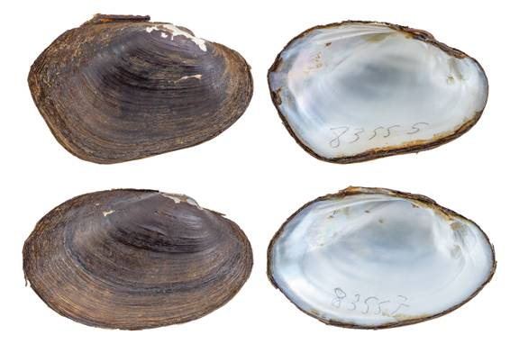

Leaunio lienosa (Conrad, 1834)
Little Spectaclecase

Leaunio lienosa – top image, female, Sabine River [Sabine River drainage], length 55.3 mm; bottom image, male, Sabine River [Sabine River drainage], length 51.1 mm.
Identification
Shell structure: moderately thin to moderately thick and somewhat inflated.
Shell outline: elliptical, oval, or oblong.
Posterior ridge: low, rounded, may show secondary ridges near the dorsal margin.
Shell color: greenish-brown, yellowish-brown, dark green, tan, brown, or black.
Rays: may present fine green rays; dull to glossy.
Shell texture: smooth.
Umbo: broad, elevated slightly above the hinge line; umbo cavity wide, shallow.
Umbo sculpture: thin ridges or weakly double-looped bars.
Pseudocardinal teeth: small, triangular, compressed, occasionally large or bulky, divergent, 2 in the left valve, typically with the anterior tooth being larger, 1 tooth in the right valve
Lateral teeth: moderately short to long, straight to slightly curved, 2 in left valve, 1 in right valve.
Interdentum: long, narrow to absent.
Nacre: white or with a slight purple tint but some populations may present a salmon, pink or purple nacre; iridescent posteriorly.
Other: sexually dimorphic, posterior margin broadly rounded to truncate in females, narrowly rounded to pointed in males; females tend to be more inflated posteriorly than males.
General range
San Jacinto River of Texas east to the panhandle of Florida, north to southern Ohio, and west to eastern Illinois.
Habitat
Streams to rivers in still to moderate currents in mud, sand, or gravel substrates. Usually found in nearshore habitats such as bank and backwater habitats or depositional areas but may occur in mainchannel habitats such as riffles. Can occur in woody debris such as logjams and exposed roots of riparian trees.
Legal
listing status:
USFWS: None